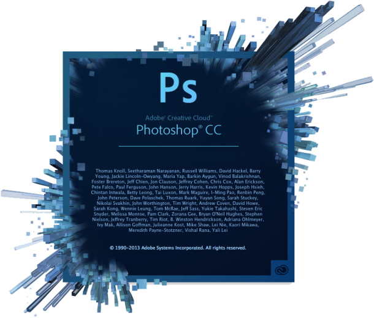

<div class="center">
  
</div>

<h2 class="fragment center">Average Load Time: 33 seconds</h2>


<div class="fragment ps-loader-highlight"></div>

<aside class="notes">
  - it takes SO long to load
  - we all know this pain
  - a constant: oh this is a good idea: let's blast the people who are to blame

  ** idea: put up a bunch of photos from PS load screens of the past that still haunt us (i still get nighmares)
</aside>
